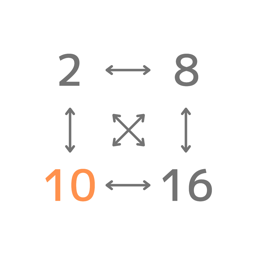

スマート進数変換は、2進数から62進数までをひとつの画面で変換できるアプリです。値を入力すると、ピン留めした進数への変換結果がすぐに並びます。
無料でご利用いただけます。アカウント登録は不要です。
不具合のご報告・ご要望・ご質問は、下記メールアドレスまでお気軽にご連絡ください。
よくある質問:
Smart Convert converts numbers between any bases from 2 to 62, all on one screen. Type a value and the results for your pinned bases appear instantly.
Free to use, and no account needed.
For bug reports, feature requests or questions, please email us at the address below.
FAQ: